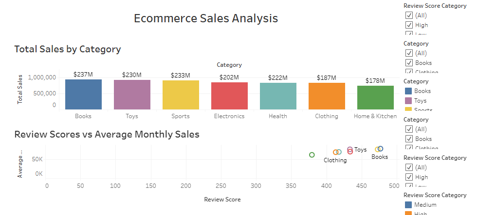
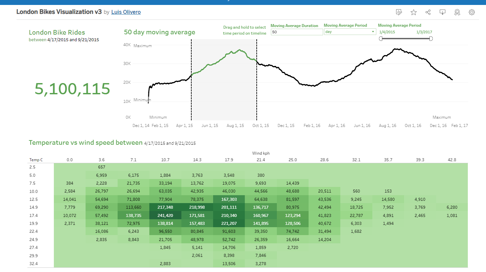
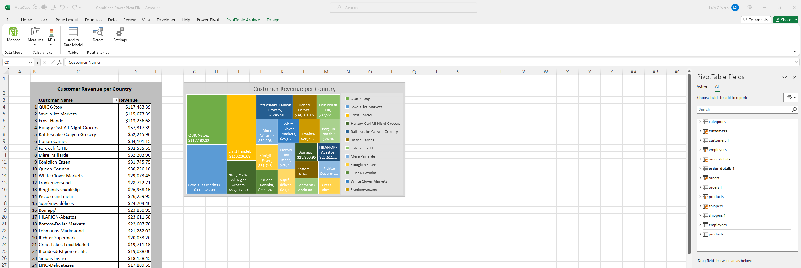
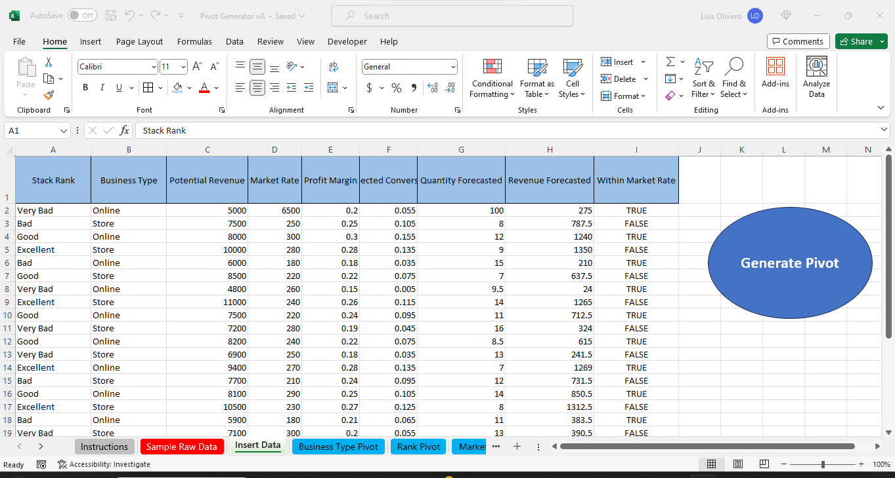

This project demonstrates web scraping using Python with the BeautifulSoup and pandas libraries. It fetches data from a Wikipedia page about Las Vegas and extracts a specific table that includes information about various sports teams, their venues, establishment dates, and titles won. The extracted data is processed into a pandas DataFrame and saved as an Excel file. The data is then imported into a MySQL database for structured storage. Finally, the data is visualized in Tableau as a detailed table, showcasing all the key information clearly and effectively.

This project analyzes e-commerce furniture sales data to uncover insights into sales performance and customer behavior. Using Python for data preprocessing and exploratory analysis, I examined product types, brands, quantity sold, pricing, and profit margins.
Key analyses include:
Sales Distribution: Identifying popular product types and brands.
Revenue Analysis: Determining high-performing products.
Profit Margins: Assessing overall profitability.
Visualizations created with Python libraries (Matplotlib, Seaborn) and Tableau present the findings clearly. Explore the Tableau visualization here.

This project involves an in-depth analysis of e-commerce product sales data to identify trends, patterns, and key insights. The analysis includes creating additional columns for total sales, average monthly sales, total revenue, review score categories, and average monthly growth rates. Various visualizations, including bar charts, pie charts, line graphs, and scatter plots, are created using Python libraries like Matplotlib and Seaborn. Additionally, interactive visualizations are developed using Tableau to provide a comprehensive overview of the sales performance. For further exploration, you can view the Tableau visualization of this project here.

This project explores data related to bike sharing in London, focusing on analyzing patterns and trends to gain insights into bike usage over time. The analysis includes examining various factors such as weather conditions, time of day, and seasonality to understand their impact on bike usage patterns. Additionally, visualizations are created using Python libraries like Matplotlib and Tableau to present the findings in an informative manner. For further exploration, you can also view the Tableau visualization of this project here.

Combined sample data across multiple files using Power Query while leveraging Power Pivot's dynamic modeling. Creating cohesive data structures enabling insightful analysis and visualizations for informed decision-making.

Utilized Excel Power Query to automate data cleaning for weekly reports.

Utilized Excel Macros to create a reports generator to be shared with a team to boost productivity.